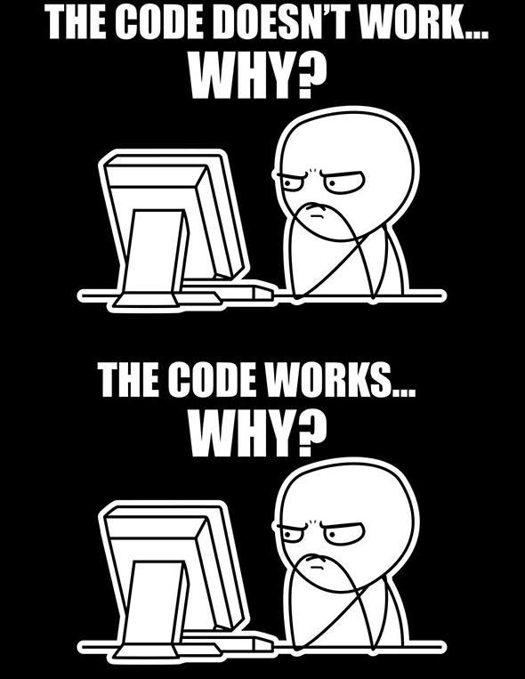

Hello World!
I just made a webpage!
You can find plenty of information about HTML tags from online resources like:
Sometimes you have a great idea.
The idea burns like the sun!
There are TONS of ways to use CSS, but you can find a great tutorials and resources at W3 Schools
There are also many web frameworks to help with getting your site styled:
There are also many web frameworks to help with getting your site styled:
This image is the actual size
These images are scaled by CSS
